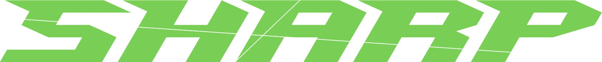

Sharp Interactive


Pre-inscripciones abiertas
Creamos videojuegos y productos audiovisuales. Entre amigos, pero en serio. Semillero IDED · UPB
Se abre en una pestaña nueva

Pre-inscripciones abiertas
Creamos videojuegos y productos audiovisuales. Entre amigos, pero en serio. Semillero IDED · UPB
Se abre en una pestaña nueva